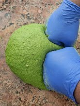
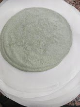
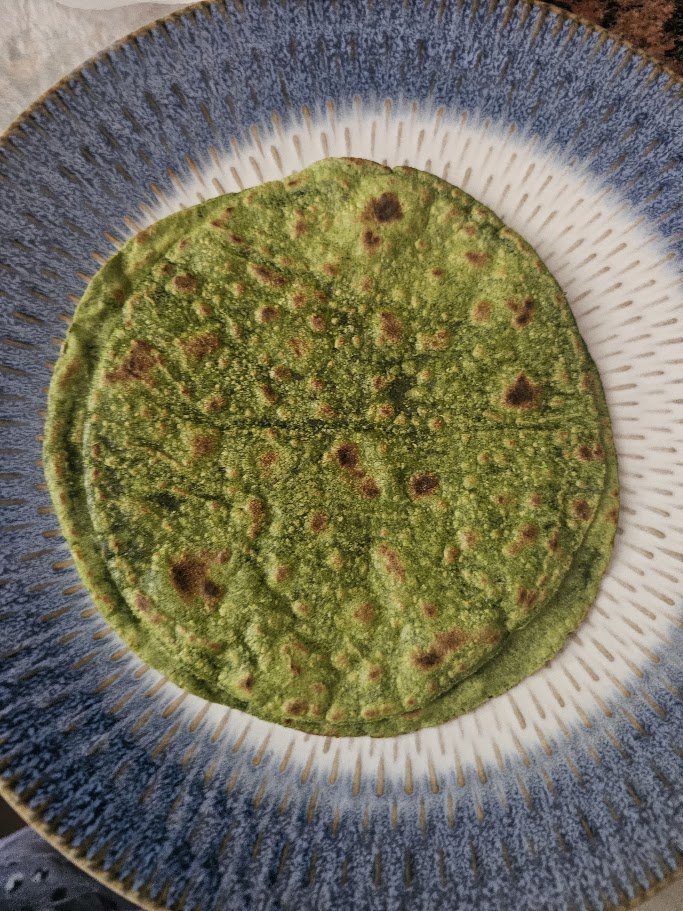
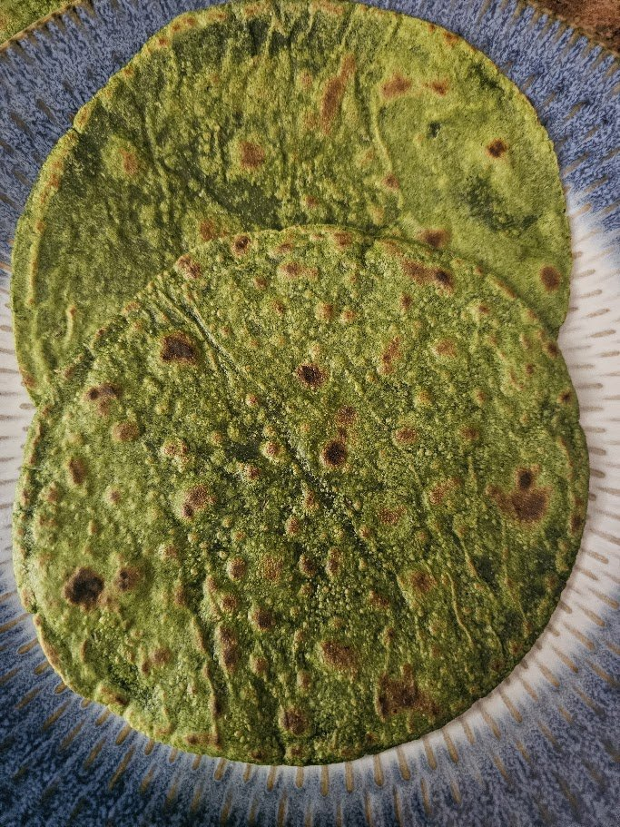
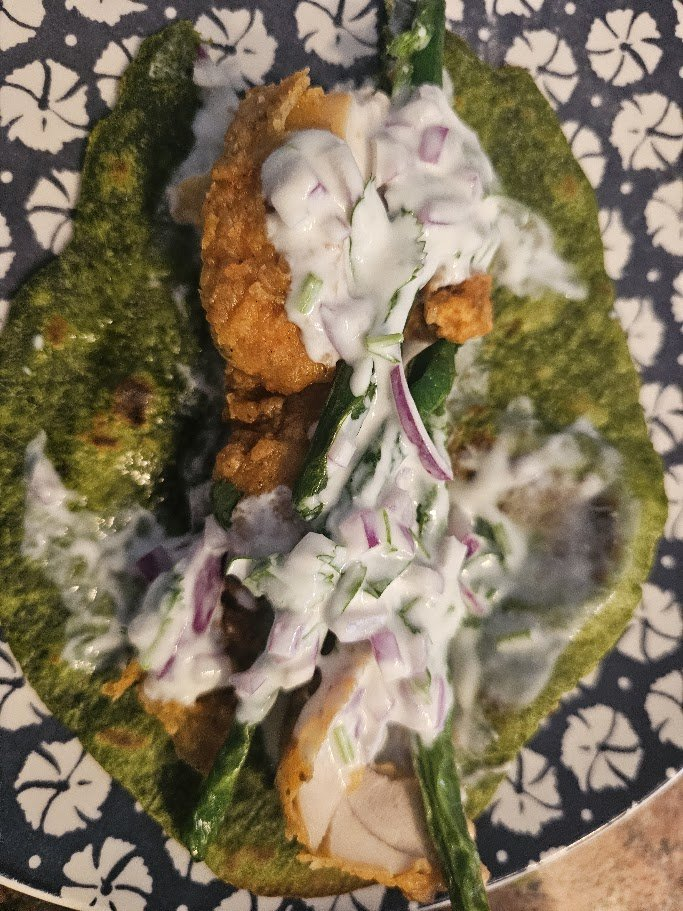

A soft, green, iron-rich roti kneaded with a garlicky spinach
paste. Wholesome and just a little spicy from green chili, and it freezes
beautifully — we press a whole week's worth at once. Eat it with any curry and ghee,
or roll it into a wrap.
from the kitchen of Noor
The Khan Family Cookbook · Breads & Bakes
Palak Roti
Palak Roti day

the greenest dough

pressed & ready

off the tava, charred just right

soft & speckled

as a wrap — chicken & raita
The Khan Family Cookbook · Breads & Bakes
photos
Breads & BakesSpinach
Palak Roti
from the kitchen of Noor
A big batch · press a week's worth & freeze
How we make it
Make the paste. Blend the spinach, garlic, green chilies, cumin and salt with just a little water into a fine paste.
Bring the dough together. Put the atta (~1 kg) in a big bowl and add about 750 g of the paste. Mix.
Knead. Knead well (gundo) into a smooth dough ball, adding a little more atta or water as needed for your flour.
Portion. Divide into ~50 g balls.
Press. Press each ball between two parchment sheets (we use a tortilla press) into a roti. Repeat for the batch.
Freeze the extras. Stack with parchment between and freeze — a whole week's worth keeps beautifully.
Cook. Cook fresh or from frozen on a hot tava until cooked through with a few charred spots.
Serve. With curry and ghee, or roll it into a wrap.
Amma's note: we made ours a wrap with fried chicken, raita and fried green beans — delicious. Full of iron and fiber, a little spicy, and healthy either way you eat it.
The Khan Family Cookbook · Breads & Bakes
Palak Roti
Eat it two ways — as a roti with any curry and ghee, or rolled into a wrap.
Our favourite wrap — fried chicken, raita and fried green beans.
Make a big batch — press ~50 g balls between parchment and freeze a whole week's worth.
Full of iron & fiber, a little spicy, and healthy either way you eat it.